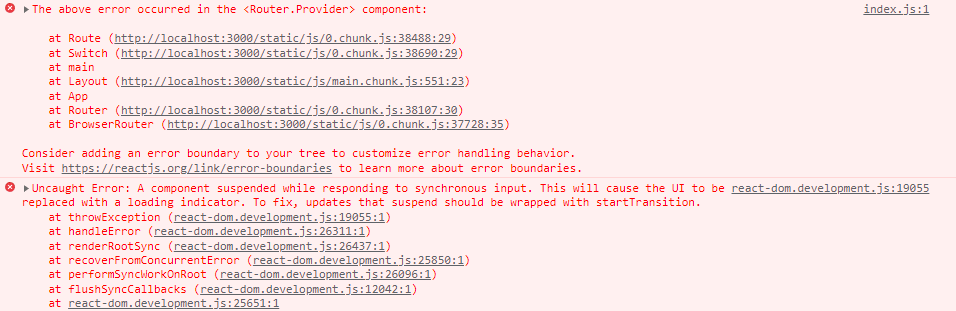

Deploying React Apps
在過去的課程中，我們都是透過 Node.js 啟動一個 local server，對專案進行即時的開發，實際上大部的開發時間也都是如此，但最後我們終究是是要將開發的專案部屬到真正的 server 以供其他使用者使用，接下來將探討 React Apps 從開發到部屬得流程
Deploying Steps
在功能開發完成後，會進行以下步驟以完成正式上線:
Test Code: 對功能進行測試，不管是人為測試又或是撰寫的測試，確保功能正盛運作
Optimize Code: 程式碼的優化，其中包含 lazy loading 提高使用者體驗與網站效能
Build App for Production: 不管使用的開發工具或框架是什麼，瀏覽器終究只看得懂 HTML、CSS & JavaScript，所以需要將程式碼打包成這些格式
Upload Production Code to Server: 上傳這些打包後的程式碼到實際的 server
Configure Server: 符合需求的 server 相關設定
Adding Lazying Loading
React.lazy(() => import(${path}))
lazying loading 所要優化的重點就是，當使用者開啟網頁時，只載入頁面必要的程式碼，藉此提高網站效能，因為如果沒有特別作這方面的優化，通常是取得所有的程式碼後，再根據 route 決定要顯示的頁面需要取用哪一段程式碼
一段基本的 Rotuer 寫法如下
1 | import { Route, Switch, Redirect } from "react-router-dom"; |
React.lazy()
而在 React Router 的專案中要加入 lazy loading 也非常容易，React 提供了一個 function lazy()，其中的參數為 callback function，回傳透過 JavaScript import 取得路徑
1 | // before lazy loading |
Suspense Component
但如果只做到這一步，會發現在切換 route 後畫面沒有顯示，開啟 devtools 會看到以下 error log

原因是加入 lazying loading 後，畫面所需的程式碼都是在切換 route 後才取得，所以需要有暫時的畫面來填補這段取得資料的空窗期，React 提供了 Suspense component，來解決這個問題，其中的 fallback attribute 可議值大入暫定頁面的 JSX，就會在這段取得資料的空窗期渲染出來
1 | import { Suspense } from 'react'; |
start 指令已經在每次啟動 local server 時反覆執行過了，build 就是將 React project打包成 HTML、CSS & JavaScript 所需的指令
1 | $ npm build |
執行後，會發現專案中出現了 build 資料夾，打開後會有許多原生檔案，這些就是 React project 打包後的產物，也是最後要放到實際 server 的檔案;另外，在打包後，就不要再對這些檔案進行修改了，因為每次執行打包指令後，這些檔案都會被再次編譯並覆蓋，所以如果有要調整的部分只能回到原有檔案些改後再次編譯
資料參考
React - The Complete Guide (Incl Hooks, React Router, Redux)
React Router